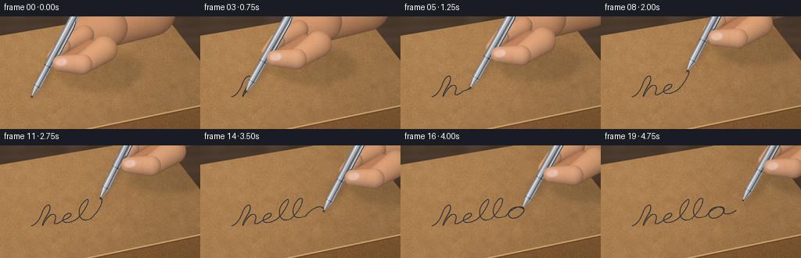
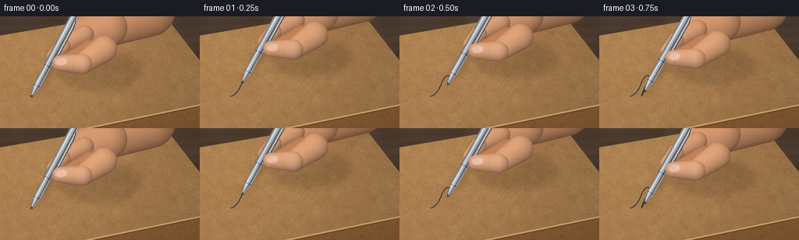

CODING AGENTS AS PIXEL WORLD MODELS
traex/GPT-6.1-Sol · mechanics_0047
点击播放 · 原生 RGB 像素
逐轮保存的候选
回放视频、检查图与代码变化。
每份候选均可单独播放。实际图片检查记录在下方工具轨迹中。
候选 01播放与检查图
点击播放 · 原生 RGB 像素


展开代码变化
--- 上一保存版本
+++ 本次保存版本
@@ -0,0 +1,253 @@
+"""Procedural macro shot: a ballpoint pen writing on fibrous kraft cardboard."""
+from pathlib import Path
+import json
+import numpy as np
+from PIL import Image, ImageDraw, ImageFilter
+import artifact_io
+
+ROOT = Path(__file__).resolve().parent
+SPEC = json.loads((ROOT / 'task_spec.json').read_text())
+S = 3
+W,H = SPEC['width']*S,SPEC['height']*S
+rng = np.random.default_rng(472)
+y,x = np.mgrid[0:H,0:W].astype(np.float32)
+x/=S; y/=S
+
+def noise_grid(nx,ny):
+ z=rng.normal(0,1,(ny,nx)).astype(np.float32)
+ return np.asarray(Image.fromarray(z).resize((W,H),Image.Resampling.BICUBIC))
+
+# Fixed, multiscale material texture; fibers remain fixed as the pen moves.
+fine=rng.normal(0,1,(H,W))
+medium=noise_grid(210,120)
+coarse=noise_grid(35,22)
+large=noise_grid(9,6)
+light=1.055 - .00065*x - .00034*y
+kraft=np.array([177.,132.,83.])[None,None,:]*light[:,:,None]
+rough=3.1*fine+3.4*medium+2.3*coarse+1.6*large
+kraft=kraft+rough[:,:,None]*np.array([1.,.91,.73])
+# Pressed paper grain, slightly raking lighting.
+kraft+=(np.roll(medium,1,axis=0)-medium)[:,:,None]*2.8
+paper=Image.fromarray(np.uint8(np.clip(kraft,0,255)))
+pd=ImageDraw.Draw(paper,'RGBA')
+for _ in range(10500):
+ xx=float(rng.uniform(0,256)); yy=float(rng.uniform(0,144))
+ length=float(rng.uniform(.15,1.65)); ang=float(rng.normal(-.1,.55))
+ dx=length*np.cos(ang); dy=length*np.sin(ang)
+ color=(72,43,19,int(rng.uniform(12,50))) if rng.random()<.65 else (241,214,160,int(rng.uniform(15,48)))
+ pd.line([(xx*S,yy*S),((xx+dx)*S,(yy+dy)*S)],fill=color,width=1)
+for _ in range(950):
+ xx=float(rng.uniform(0,256)); yy=float(rng.uniform(0,144))
+ pd.ellipse((xx*S,yy*S,(xx+.3)*S,(yy+.2)*S), fill=(65,42,24,55))
+# Wooden tabletop out of focus around the carton.
+wood= np.zeros((H,W,3),float)
+wood[:]=[78,61,48]
+wood+= (noise_grid(18,7)*4+3*np.sin(y*.5+x*.022))[:,:,None]
+wood=Image.fromarray(np.uint8(np.clip(wood,0,255))).filter(ImageFilter.GaussianBlur(2*S))
+box_poly=[(-32,30),(204,-10),(294,106),(-10,169)]
+mask=Image.new('L',(W,H)); ImageDraw.Draw(mask).polygon([(a*S,b*S) for a,b in box_poly],fill=255)
+# Soft box shadow and darker exposed front wall.
+base=wood.copy()
+front=Image.new('RGB',(W,H))
+f=np.array([127,88,51.])[None,None,:]+(4*medium+2*fine)[:,:,None]
+f=np.broadcast_to(f,(H,W,3)).copy()
+f-=((y-(169-(x+10)*63/304))*.15)[:,:,None]
+front=Image.fromarray(np.uint8(np.clip(f,0,255)))
+fm=Image.new('L',(W,H)); fd=ImageDraw.Draw(fm)
+fd.polygon([(-10*S,169*S),(294*S,106*S),(300*S,148*S),(-8*S,202*S)],fill=255)
+base.paste(front,(0,0),fm)
+base.paste(paper,(0,0),mask)
+bd=ImageDraw.Draw(base,'RGBA')
+bd.line([(-10*S,169*S),(294*S,106*S)], fill=(227,186,121,190),width=2*S)
+bd.line([(-10*S,171*S),(294*S,108*S)], fill=(82,49,26,150),width=S)
+# Subtle cardboard crushed-edge marks, not a flat brown backdrop.
+for xx in np.arange(95,259,1.8):
+ yy=169-(xx+10)*63/304
+ bd.line([(xx*S,(yy+2)*S),((xx+.2)*S,(yy+3.7)*S)], fill=(71,46,28,75),width=1)
+base_arr=np.asarray(base).astype(float)
+
+# A single continuous, handwritten 'hello', represented by cubic Beziers.
+curves=[]
+def bez(p0,p1,p2,p3):
+ t=np.linspace(0,1,75)[:,None]
+ curves.append((1-t)**3*np.array(p0)+3*(1-t)**2*t*np.array(p1)+3*(1-t)*t*t*np.array(p2)+t**3*np.array(p3))
+# h: entry, ascender loop, descent and shoulder
+bez((0,0),(5,-1),(10,-10),(12,-20))
+bez((12,-20),(17,-34),(23,-30),(18,-16))
+bez((18,-16),(13,-6),(10,5),(13,0))
+bez((13,0),(19,-19),(29,-17),(25,-3))
+bez((25,-3),(23,3),(29,2),(33,-3))
+# e: little enclosed loop
+bez((33,-3),(47,-6),(43,-17),(36,-10))
+bez((36,-10),(29,0),(39,6),(49,-3))
+# first l
+bez((49,-3),(57,-11),(65,-35),(58,-29))
+bez((58,-29),(47,-20),(49,6),(63,0))
+# second l
+bez((63,0),(76,-14),(79,-35),(71,-28))
+bez((71,-28),(63,-18),(62,6),(79,-2))
+# o
+bez((79,-2),(92,-22),(103,-11),(96,-2))
+bez((96,-2),(89,8),(78,2),(83,-9))
+bez((83,-9),(88,-17),(100,-13),(97,-5))
+bez((97,-5),(99,0),(104,1),(111,-5))
+path=np.concatenate(curves)
+# Physical plane projection: diagonal baseline and a foreshortened writing height.
+path=np.c_[40+path[:,0]*1.20, 103+path[:,1]*.84-path[:,0]*.143]
+dist=np.r_[0,np.cumsum(np.linalg.norm(np.diff(path,axis=0),axis=1))]
+total=dist[-1]
+
+def partial_path(progress):
+ d=progress*total
+ i=min(int(np.searchsorted(dist,d)),len(path)-1)
+ if i==0:return path[:1]
+ a=(d-dist[i-1])/(dist[i]-dist[i-1]+1e-6)
+ return np.vstack([path[:i],path[i-1]*(1-a)+path[i]*a])
+
+# Analytic shaded organic forms. No mesh renderer or external assets.
+def capsule_layer(canvas,a,b,ra,rb,color,seed=0):
+ a=np.asarray(a); b=np.asarray(b); v=b-a; length=np.linalg.norm(v)
+ u=v/length; n=np.array([-u[1],u[0]])
+ ax=x-a[0]; ay=y-a[1]
+ s=ax*u[0]+ay*u[1]; q=ax*n[0]+ay*n[1]
+ t=np.clip(s/length,0,1)
+ r=ra+(rb-ra)*t
+ cap=np.maximum(-s,s-length)
+ rho=np.sqrt(q*q+np.maximum(cap,0)**2)/r
+ alpha=np.clip((1-rho)*S*r+.5,0,1)
+ z=np.sqrt(np.clip(1-rho*rho,0,1))
+ # Upper-left key light with skin subsurface warmth near silhouette.
+ normal_x=n[0]*q/r + u[0]*np.where(s<0,s/r,np.where(s>length,(s-length)/r,0))
+ normal_y=n[1]*q/r + u[1]*np.where(s<0,s/r,np.where(s>length,(s-length)/r,0))
+ shade=.68+.32*z-.17*normal_y-.10*normal_x
+ shade+=.014*fine+.008*medium
+ col=np.asarray(color)[None,None,:]*shade[:,:,None]
+ col[:,:,0]+=4*(1-z); col[:,:,2]-=3*(1-z)
+ canvas[:]=canvas*(1-alpha[:,:,None])+np.clip(col,0,255)*alpha[:,:,None]
+ return alpha
+
+def draw_hand(arr,tip,behind=True):
+ px,py=tip
+ def p(a,b):return (px+a,py+b)
+ if behind:
+ # The hand enters from the upper right; only the grip is in focus.
+ capsule_layer(arr,p(83,-86),p(151,-111),26,34,(202,145,105))
+ capsule_layer(arr,p(71,-82),p(98,-89),23,25,(207,149,109))
+ capsule_layer(arr,p(68,-80),p(40,-65),12,10,(210,152,113))
+ capsule_layer(arr,p(40,-65),p(28,-51),10,8.3,(214,158,119))
+ # Middle finger, tucked beneath the pen, partly hidden by the thumb.
+ capsule_layer(arr,p(77,-61),p(48,-47),13,10,(184,126,89))
+ else:
+ capsule_layer(arr,p(93,-61),p(65,-42),17,13,(214,157,116))
+ capsule_layer(arr,p(65,-42),p(37,-43),13,10.2,(219,163,125))
+ # Thumb nail: flattened organic oval with a lunula and a fine cuticle.
+ cx,cy=px+38.5,py-45
+ theta=-.15
+ dx=x-cx; dy=y-cy
+ xx=dx*np.cos(theta)+dy*np.sin(theta)
+ yy=-dx*np.sin(theta)+dy*np.cos(theta)
+ rr=np.sqrt((xx/7.9)**2+(yy/5.5)**2)
+ al=np.clip((1-rr)*S*5+.5,0,1)
+ na=np.zeros_like(arr); na[:]=[225,183,161]
+ na+=(1-(yy/5.5)**2)[:,:,None]*np.array([9,10,9])
+ na-=np.exp(-((rr-.91)/.045)**2)[:,:,None]*np.array([16,22,22])
+ na+=np.exp(-((xx-3.8)/1.7)**2-(yy/4)**2)[:,:,None]*np.array([7,8,7])
+ arr[:]=arr*(1-al[:,:,None])+na*al[:,:,None]
+ # Thumb creases and joint wrinkles, deliberately subtle.
+ layer=Image.new('RGBA',(W,H)); dr=ImageDraw.Draw(layer)
+ dr.arc([(px+53)*S,(py-51)*S,(px+62)*S,(py-32)*S],100,237,fill=(114,70,46,56),width=1)
+ dr.arc([(px+55)*S,(py-50)*S,(px+65)*S,(py-32)*S],106,228,fill=(137,85,58,38),width=1)
+ im=Image.fromarray(np.uint8(np.clip(arr,0,255))).convert('RGBA'); im.alpha_composite(layer)
+ arr[:]=np.asarray(im.convert('RGB'))
+
+def pen_layer(arr,tip,ang):
+ u=np.array([np.sin(ang),-np.cos(ang)]); n=np.array([-u[1],u[0]])
+ dx=x-tip[0]; dy=y-tip[1]
+ s=dx*u[0]+dy*u[1]; q=dx*n[0]+dy*n[1]
+ rad=np.where(s<15,.55+np.maximum(s,0)*.275,np.where(s<44,4.72,5.25))
+ end=120
+ alpha=np.clip((rad-np.abs(q))*S+.5,0,1)*np.clip(s*S+.5,0,1)*np.clip((end-s)*S+.5,0,1)
+ v=q/rad
+ # Chrome reflects broad dark bands and a narrow white softbox highlight.
+ intensity=91+84*np.sqrt(np.clip(1-v*v,0,1))
+ intensity+=71*np.exp(-((v+.39)/.16)**2)
+ intensity-=80*np.exp(-((v-.46)/.19)**2)
+ intensity+=39*np.exp(-((v-.85)/.10)**2)
+ intensity+=7*np.sin(s*.08)
+ intensity+=fine*.65
+ # Machined circular grooves on the grip and tip/barrel junctions.
+ grooves=(s>19)&(s<43)
+ ridge=np.maximum(0,np.cos(s*np.pi*1.02))**12
+ intensity-=grooves*(22*ridge)
+ intensity-=np.exp(-((s-15.5)/.43)**2)*68
+ intensity-=np.exp(-((s-44.6)/.58)**2)*58
+ color=np.stack([intensity*.985,intensity*1.005,intensity*1.036],axis=-1)
+ # Actual dark tungsten ball is the last fraction of a millimeter.
+ color=np.where((s<1.9)[:,:,None],np.array([36.,39.,42.]),color)
+ arr[:]=arr*(1-alpha[:,:,None])+np.clip(color,0,255)*alpha[:,:,None]
+ # Narrow polished spring clip on the side of the barrel.
+ clip=Image.new('RGBA',(W,H)); dr=ImageDraw.Draw(clip)
+ def at(s,q):return tuple((np.asarray(tip)+u*s+n*q)*S)
+ dr.line([at(112,4.2),at(104,6.0),at(63,6.0),at(59,4.7)],fill=(71,78,82,255),width=2*S)
+ dr.line([at(111,3.9),at(103,5.4),at(64,5.4)],fill=(232,235,234,255),width=S)
+ im=Image.fromarray(np.uint8(np.clip(arr,0,255))).convert('RGBA'); im.alpha_composite(clip)
+ arr[:]=np.asarray(im.convert('RGB'))
+
+frames=[]
+for frame in range(SPEC['frames']):
+ # Pause, write in contact, then gently lift off to reveal the completed mark.
+ if frame==0: progress=0.
+ elif frame<=17: progress=(frame/17)
+ else: progress=1.
+ pts=partial_path(progress)
+ tip=pts[-1].copy()
+ lift=max(0,frame-17)
+ if lift:tip+=np.array([4*lift,-6*lift])
+ arr=base_arr.copy()
+ # Ink deposits on fiber peaks: a fine continuous line with microscopic skips.
+ ink=Image.new('L',(W,H)); idr=ImageDraw.Draw(ink)
+ if len(pts)>1:
+ p=[tuple(k*S) for k in pts]
+ idr.line(p,fill=245,width=3,joint='curve')
+ # Variable pressure produces a slightly broader downstroke.
+ for j in range(1,len(pts),3):
+ a,b=pts[j-1],pts[j]
+ if b[1]-a[1]>.05:
+ idr.line([tuple(a*S),tuple(b*S)],fill=238,width=4)
+ ink_a=np.asarray(ink).astype(float)/255
+ ink_a*=np.clip(.92+.075*medium+.03*fine,.56,1)
+ ink_a*=np.where(fine>1.6,.66,1)
+ ink_col=np.zeros_like(arr); ink_col[:]=[27,39,53]
+ ink_col+=medium[:,:,None]*1.5
+ arr=arr*(1-ink_a[:,:,None])+ink_col*ink_a[:,:,None]
+ ang=.49+.027*np.sin(frame*.44)
+ u=np.array([np.sin(ang),-np.cos(ang)])
+ # Pen and hand cast soft shadows onto the textured top plane.
+ sh=Image.new('L',(W,H)); sd=ImageDraw.Draw(sh)
+ # The shadow meets the ball exactly at contact; it widens with height.
+ shadow_points=[]
+ for ss,rr in [(0,1.3),(18,4.0),(55,8.0),(118,12.0)]:
+ c=tip+u*ss+np.array([ss*.085+lift*2,ss*.095+lift*3])
+ shadow_points.append((c,rr))
+ for (a,ra),(b,rb) in zip(shadow_points[:-1],shadow_points[1:]):
+ sd.line([tuple(a*S),tuple(b*S)],fill=65,width=int((ra+rb)*S))
+ px,py=tip
+ sd.ellipse(((px+33)*S,(py-58)*S,(px+142)*S,(py-7)*S),fill=52)
+ shadow=np.asarray(sh.filter(ImageFilter.GaussianBlur(3.6*S))).astype(float)/255
+ shadow*=np.asarray(mask)/255
+ arr*=1-shadow[:,:,None]*.56
+ # Tiny concentrated contact shadow emphasizes touching and friction.
+ if lift==0:
+ contact=np.exp(-((x-tip[0]-.7)/1.9)**2-((y-tip[1]-.6)/1.0)**2)*.28
+ arr*=1-contact[:,:,None]
+ draw_hand(arr,tip,True)
+ pen_layer(arr,tip,ang)
+ draw_hand(arr,tip,False)
+ # Warm macro photograph: quiet vignette, sharp contact plane, antialiasing.
+ vignette=1-.07*((x-126)/170)**2-.04*((y-78)/110)**2
+ arr*=vignette[:,:,None]
+ image=Image.fromarray(np.uint8(np.clip(arr,0,255)))
+ image=image.resize((SPEC['width'],SPEC['height']),Image.Resampling.LANCZOS)
+ frames.append(np.asarray(image))
+artifact_io.save(np.stack(frames).astype(np.uint8),ROOT)
+print(f'Saved {len(frames)} RGB frames, {SPEC["width"]}x{SPEC["height"]}, {SPEC["fps"]} fps.')
可观测工具轨迹
实际执行的命令与返回图片。
命令 1exit 0
/bin/bash -lc 'ls -la && cat prompt.txt && cat GENERATION_RULES.md && cat task_spec.json'
命令 2exit 0
/bin/bash -lc 'cat artifact_io.py'
命令 3exit 0
/bin/bash -lc "python - <<'PY'
import PIL,numpy
print('PIL', PIL.__version__)
PY"命令 4exit 0
/bin/bash -lc "cat > generate.py <<'PY'
\"\"\"Procedural macro shot: a ballpoint pen writing on fibrous kraft cardboard.\"\"\"
from pathlib import Path
import json
import numpy as np
from PIL import Image, ImageDraw, ImageFilter
import artifact_io
ROOT = Path(__file__).resolve().parent
SPEC = json.loads((ROOT / 'task_spec.json').read_text())
S = 3
W,H = SPEC['width']*S,SPEC['height']*S
rng = np.random.default_rng(472)
y,x = np.mgrid[0:H,0:W].astype(np.float32)
x/=S; y/=S
def noise_grid(nx,ny):
z=rng.normal(0,1,(ny,nx)).astype(np.float32)
return np.asarray(Image.fromarray(z).resize((W,H),Image.Resampling.BICUBIC))
# Fixed, multiscale material texture; fibers remain fixed as the pen moves.
fine=rng.normal(0,1,(H,W))
medium=noise_grid(210,120)
coarse=noise_grid(35,22)
large=noise_grid(9,6)
light=1.055 - .00065*x - .00034*y
kraft=np.array([177.,132.,83.])[None,None,:]*light[:,:,None]
rough=3.1*fine+3.4*medium+2.3*coarse+1.6*large
kraft=kraft+rough[:,:,None]*np.array([1.,.91,.73])
# Pressed paper grain, slightly raking lighting.
kraft+=(np.roll(medium,1,axis=0)-medium)[:,:,None]*2.8
paper=Image.fromarray(np.uint8(np.clip(kraft,0,255)))
pd=ImageDraw.Draw(paper,'RGBA')
for _ in range(10500):
xx=float(rng.uniform(0,256)); yy=float(rng.uniform(0,144))
length=float(rng.uniform(.15,1.65)); ang=float(rng.normal(-.1,.55))
dx=length*np.cos(ang); dy=length*np.sin(ang)
color=(72,43,19,int(rng.uniform(12,50))) if rng.random()<.65 else (241,214,160,int(rng.uniform(15,48)))
pd.line([(xx*S,yy*S),((xx+dx)*S,(yy+dy)*S)],fill=color,width=1)
for _ in range(950):
xx=float(rng.uniform(0,256)); yy=float(rng.uniform(0,144))
pd.ellipse((xx*S,yy*S,(xx+.3)*S,(yy+.2)*S), fill=(65,42,24,55))
# Wooden tabletop out of focus around the carton.
wood= np.zeros((H,W,3),float)
wood[:]=[78,61,48]
wood+= (noise_grid(18,7)*4+3*np.sin(y*.5+x*.022))[:,:,None]
wood=Image.fromarray(np.uint8(np.clip(wood,0,255))).filter(ImageFilter.GaussianBlur(2*S))
box_poly=[(-32,30),(204,-10),(294,106),(-10,169)]
mask=Image.new('L',(W,H)); ImageDraw.Draw(mask).polygon([(a*S,b*S) for a,b in box_poly],fill=255)
# Soft box shadow and darker exposed front wall.
base=wood.copy()
front=Image.new('RGB',(W,H))
f=np.array([127,88,51.])[None,None,:]+(4*medium+2*fine)[:,:,None]
f=np.broadcast_to(f,(H,W,3)).copy()
f-=((y-(169-(x+10)*63/304))*.15)[:,:,None]
front=Image.fromarray(np.uint8(np.clip(f,0,255)))
fm=Image.new('L',(W,H)); fd=ImageDraw.Draw(fm)
fd.polygon([(-10*S,169*S),(294*S,106*S),(300*S,148*S),(-8*S,202*S)],fill=255)
base.paste(front,(0,0),fm)
base.paste(paper,(0,0),mask)
bd=ImageDraw.Draw(base,'RGBA')
bd.line([(-10*S,169*S),(294*S,106*S)], fill=(227,186,121,190),width=2*S)
bd.line([(-10*S,171*S),(294*S,108*S)], fill=(82,49,26,150),width=S)
# Subtle cardboard crushed-edge marks, not a flat brown backdrop.
for xx in np.arange(95,259,1.8):
yy=169-(xx+10)*63/304
bd.line([(xx*S,(yy+2)*S),((xx+.2)*S,(yy+3.7)*S)], fill=(71,46,28,75),width=1)
base_arr=np.asarray(base).astype(float)
# A single continuous, handwritten 'hello', represented by cubic Beziers.
curves=[]
def bez(p0,p1,p2,p3):
t=np.linspace(0,1,75)[:,None]
curves.append((1-t)**3*np.array(p0)+3*(1-t)**2*t*np.array(p1)+3*(1-t)*t*t*np.array(p2)+t**3*np.array(p3))
# h: entry, ascender loop, descent and shoulder
bez((0,0),(5,-1),(10,-10),(12,-20))
bez((12,-20),(17,-34),(23,-30),(18,-16))
bez((18,-16),(13,-6),(10,5),(13,0))
bez((13,0),(19,-19),(29,-17),(25,-3))
bez((25,-3),(23,3),(29,2),(33,-3))
# e: little enclosed loop
bez((33,-3),(47,-6),(43,-17),(36,-10))
bez((36,-10),(29,0),(39,6),(49,-3))
# first l
bez((49,-3),(57,-11),(65,-35),(58,-29))
bez((58,-29),(47,-20),(49,6),(63,0))
# second l
bez((63,0),(76,-14),(79,-35),(71,-28))
bez((71,-28),(63,-18),(62,6),(79,-2))
# o
bez((79,-2),(92,-22),(103,-11),(96,-2))
bez((96,-2),(89,8),(78,2),(83,-9))
bez((83,-9),(88,-17),(100,-13),(97,-5))
bez((97,-5),(99,0),(104,1),(111,-5))
path=np.concatenate(curves)
# Physical plane projection: diagonal baseline and a foreshortened writing height.
path=np.c_[40+path[:,0]*1.20, 103+path[:,1]*.84-path[:,0]*.143]
dist=np.r_[0,np.cumsum(np.linalg.norm(np.diff(path,axis=0),axis=1))]
total=dist[-1]
def partial_path(progress):
d=progress*total
i=min(int(np.searchsorted(dist,d)),len(path)-1)
if i==0:return path[:1]
a=(d-dist[i-1])/(dist[i]-dist[i-1]+1e-6)
return np.vstack([path[:i],path[i-1]*(1-a)+path[i]*a])
# Analytic shaded organic forms. No mesh renderer or external assets.
def capsule_layer(canvas,a,b,ra,rb,color,seed=0):
a=np.asarray(a); b=np.asarray(b); v=b-a; length=np.linalg.norm(v)
u=v/length; n=np.array([-u[1],u[0]])
ax=x-a[0]; ay=y-a[1]
s=ax*u[0]+ay*u[1]; q=ax*n[0]+ay*n[1]
t=np.clip(s/length,0,1)
r=ra+(rb-ra)*t
cap=np.maximum(-s,s-length)
rho=np.sqrt(q*q+np.maximum(cap,0)**2)/r
alpha=np.clip((1-rho)*S*r+.5,0,1)
z=np.sqrt(np.clip(1-rho*rho,0,1))
# Upper-left key light with skin subsurface warmth near silhouette.
normal_x=n[0]*q/r + u[0]*np.where(s<0,s/r,np.where(s>length,(s-length)/r,0))
normal_y=n[1]*q/r + u[1]*np.where(s<0,s/r,np.where(s>length,(s-length)/r,0))
shade=.68+.32*z-.17*normal_y-.10*normal_x
shade+=.014*fine+.008*medium
col=np.asarray(color)[None,None,:]*shade[:,:,None]
col[:,:,0]+=4*(1-z); col[:,:,2]-=3*(1-z)
canvas[:]=canvas*(1-alpha[:,:,None])+np.clip(col,0,255)*alpha[:,:,None]
return alpha
def draw_hand(arr,tip,behind=True):
px,py=tip
def p(a,b):return (px+a,py+b)
if behind:
# The hand enters from the upper right; only the grip is in focus.
capsule_layer(arr,p(83,-86),p(151,-111),26,34,(202,145,105))
capsule_layer(arr,p(71,-82),p(98,-89),23,25,(207,149,109))
capsule_layer(arr,p(68,-80),p(40,-65),12,10,(210,152,113))
capsule_layer(arr,p(40,-65),p(28,-51),10,8.3,(214,158,119))
# Middle finger, tucked beneath the pen, partly hidden by the thumb.
capsule_layer(arr,p(77,-61),p(48,-47),13,10,(184,126,89))
else:
capsule_layer(arr,p(93,-61),p(65,-42),17,13,(214,157,116))
capsule_layer(arr,p(65,-42),p(37,-43),13,10.2,(219,163,125))
# Thumb nail: flattened organic oval with a lunula and a fine cuticle.
cx,cy=px+38.5,py-45
theta=-.15
dx=x-cx; dy=y-cy
xx=dx*np.cos(theta)+dy*np.sin(theta)
yy=-dx*np.sin(theta)+dy*np.cos(theta)
rr=np.sqrt((xx/7.9)**2+(yy/5.5)**2)
al=np.clip((1-rr)*S*5+.5,0,1)
na=np.zeros_like(arr); na[:]=[225,183,161]
na+=(1-(yy/5.5)**2)[:,:,None]*np.array([9,10,9])
na-=np.exp(-((rr-.91)/.045)**2)[:,:,None]*np.array([16,22,22])
na+=np.exp(-((xx-3.8)/1.7)**2-(yy/4)**2)[:,:,None]*np.array([7,8,7])
arr[:]=arr*(1-al[:,:,None])+na*al[:,:,None]
# Thumb creases and joint wrinkles, deliberately subtle.
layer=Image.new('RGBA',(W,H)); dr=ImageDraw.Draw(layer)
dr.arc([(px+53)*S,(py-51)*S,(px+62)*S,(py-32)*S],100,237,fill=(114,70,46,56),width=1)
dr.arc([(px+55)*S,(py-50)*S,(px+65)*S,(py-32)*S],106,228,fill=(137,85,58,38),width=1)
im=Image.fromarray(np.uint8(np.clip(arr,0,255))).convert('RGBA'); im.alpha_composite(layer)
arr[:]=np.asarray(im.convert('RGB'))
def pen_layer(arr,tip,ang):
u=np.array([np.sin(ang),-np.cos(ang)]); n=np.array([-u[1],u[0]])
dx=x-tip[0]; dy=y-tip[1]
s=dx*u[0]+dy*u[1]; q=dx*n[0]+dy*n[1]
rad=np.where(s<15,.55+np.maximum(s,0)*.275,np.where(s<44,4.72,5.25))
end=120
alpha=np.clip((rad-np.abs(q))*S+.5,0,1)*np.clip(s*S+.5,0,1)*np.clip((end-s)*S+.5,0,1)
v=q/rad
# Chrome reflects broad dark bands and a narrow white softbox highlight.
intensity=91+84*np.sqrt(np.clip(1-v*v,0,1))
intensity+=71*np.exp(-((v+.39)/.16)**2)
intensity-=80*np.exp(-((v-.46)/.19)**2)
intensity+=39*np.exp(-((v-.85)/.10)**2)
intensity+=7*np.sin(s*.08)
intensity+=fine*.65
# Machined circular grooves on the grip and tip/barrel junctions.
grooves=(s>19)&(s<43)
ridge=np.maximum(0,np.cos(s*np.pi*1.02))**12
intensity-=grooves*(22*ridge)
intensity-=np.exp(-((s-15.5)/.43)**2)*68
intensity-=np.exp(-((s-44.6)/.58)**2)*58
color=np.stack([intensity*.985,intensity*1.005,intensity*1.036],axis=-1)
# Actual dark tungsten ball is the last fraction of a millimeter.
color=np.where((s<1.9)[:,:,None],np.array([36.,39.,42.]),color)
arr[:]=arr*(1-alpha[:,:,None])+np.clip(color,0,255)*alpha[:,:,None]
# Narrow polished spring clip on the side of the barrel.
clip=Image.new('RGBA',(W,H)); dr=ImageDraw.Draw(clip)
def at(s,q):return tuple((np.asarray(tip)+u*s+n*q)*S)
dr.line([at(112,4.2),at(104,6.0),at(63,6.0),at(59,4.7)],fill=(71,78,82,255),width=2*S)
dr.line([at(111,3.9),at(103,5.4),at(64,5.4)],fill=(232,235,234,255),width=S)
im=Image.fromarray(np.uint8(np.clip(arr,0,255))).convert('RGBA'); im.alpha_composite(clip)
arr[:]=np.asarray(im.convert('RGB'))
frames=[]
for frame in range(SPEC['frames']):
# Pause, write in contact, then gently lift off to reveal the completed mark.
if frame==0: progress=0.
elif frame<=17: progress=(frame/17)
else: progress=1.
pts=partial_path(progress)
tip=pts[-1].copy()
lift=max(0,frame-17)
if lift:tip+=np.array([4*lift,-6*lift])
arr=base_arr.copy()
# Ink deposits on fiber peaks: a fine continuous line with microscopic skips.
ink=Image.new('L',(W,H)); idr=ImageDraw.Draw(ink)
if len(pts)>1:
p=[tuple(k*S) for k in pts]
idr.line(p,fill=245,width=3,joint='curve')
# Variable pressure produces a slightly broader downstroke.
for j in range(1,len(pts),3):
a,b=pts[j-1],pts[j]
if b[1]-a[1]>.05:
idr.line([tuple(a*S),tuple(b*S)],fill=238,width=4)
ink_a=np.asarray(ink).astype(float)/255
ink_a*=np.clip(.92+.075*medium+.03*fine,.56,1)
ink_a*=np.where(fine>1.6,.66,1)
ink_col=np.zeros_like(arr); ink_col[:]=[27,39,53]
ink_col+=medium[:,:,None]*1.5
arr=arr*(1-ink_a[:,:,None])+ink_col*ink_a[:,:,None]
ang=.49+.027*np.sin(frame*.44)
u=np.array([np.sin(ang),-np.cos(ang)])
# Pen and hand cast soft shadows onto the textured top plane.
sh=Image.new('L',(W,H)); sd=ImageDraw.Draw(sh)
# The shadow meets the ball exactly at contact; it widens with height.
shadow_points=[]
for ss,rr in [(0,1.3),(18,4.0),(55,8.0),(118,12.0)]:
c=tip+u*ss+np.array([ss*.085+lift*2,ss*.095+lift*3])
shadow_points.append((c,rr))
for (a,ra),(b,rb) in zip(shadow_points[:-1],shadow_points[1:]):
sd.line([tuple(a*S),tuple(b*S)],fill=65,width=int((ra+rb)*S))
px,py=tip
sd.ellipse(((px+33)*S,(py-58)*S,(px+142)*S,(py-7)*S),fill=52)
shadow=np.asarray(sh.filter(ImageFilter.GaussianBlur(3.6*S))).astype(float)/255
shadow*=np.asarray(mask)/255
arr*=1-shadow[:,:,None]*.56
# Tiny concentrated contact shadow emphasizes touching and friction.
if lift==0:
contact=np.exp(-((x-tip[0]-.7)/1.9)**2-((y-tip[1]-.6)/1.0)**2)*.28
arr*=1-contact[:,:,None]
draw_hand(arr,tip,True)
pen_layer(arr,tip,ang)
draw_hand(arr,tip,False)
# Warm macro photograph: quiet vignette, sharp contact plane, antialiasing.
vignette=1-.07*((x-126)/170)**2-.04*((y-78)/110)**2
arr*=vignette[:,:,None]
image=Image.fromarray(np.uint8(np.clip(arr,0,255)))
image=image.resize((SPEC['width'],SPEC['height']),Image.Resampling.LANCZOS)
frames.append(np.asarray(image))
artifact_io.save(np.stack(frames).astype(np.uint8),ROOT)
print(f'Saved {len(frames)} RGB frames, {SPEC[\"width\"]}x{SPEC[\"height\"]}, {SPEC[\"fps\"]} fps.')
PY
python generate.py"命令 5exit 0
/bin/bash -lc "python - <<'PY'
from pathlib import Path
import numpy as np
from PIL import Image
p=Path('.')
a=np.load(p/'pixels.npz')['pixels']
files=sorted((p/'frames').glob('*.png'))
assert a.shape==(144,256,20)
assert len(files)==20
assert all(Image.open(f).size==(256,144) and Image.open(f).mode=='RGB' for f in files)
assert (p/'index.html').is_file()
print('Verified:',a.shape,'20 RGB PNG frames, player and inspection artifacts.')
print('Frame changes:', [int(np.count_nonzero(a[:,:,i]"'!=a[:,:,i-1])) for i in [1,10,19]])
PY'保存候选 1 份；完成命令 5 次；可验证图片返回 0 张。原始 API 响应与完整日志保留在本地。